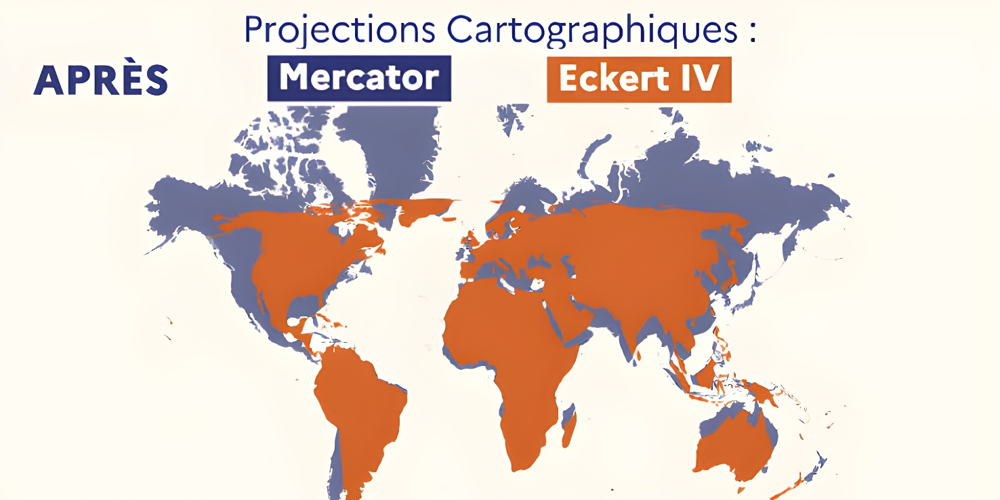

Le 4 septembre 2026, le Quai d'Orsay a officiellement annoncé l'abandon de la projection de Mercator pour ses cartes diplomatiques, au profit de la projection Eckert IV. Le même jour, l'Assemblée générale des Nations unies adoptait une résolution portée par le Togo et soutenue par l'Union africaine, encourageant gouvernements, écoles et entreprises technologiques à privilégier des projections dites « équivalentes », qui respectent les proportions réelles des superficies. Une bascule symbolique qui relance le débat, vieux de plusieurs décennies, sur la neutralité — ou non — des cartes.
La projection de Mercator doit son nom au géographe flamand Gerardus Mercator, qui la met au point en 1569. Sa qualité principale — et la raison de son succès durable — tient à ce qu'elle conserve les angles : une ligne droite tracée sur la carte correspond à un cap constant, ce qui en fait un outil précieux pour la navigation maritime à l'aide d'un compas. Mais cet avantage technique a un coût : pour conserver les angles, la projection doit dilater les surfaces à mesure que l'on s'éloigne de l'équateur, si bien que les régions proches des pôles apparaissent démesurément agrandies par rapport à celles qui se trouvent sous les tropiques.
Le décalage entre taille perçue et taille réelle est spectaculaire : sur une carte de Mercator, le Groenland semble presque aussi vaste que le continent africain, alors qu'en réalité l'Afrique lui est environ quatorze fois supérieure en superficie. La Russie, le Canada ou l'Europe se trouvent de la même manière visuellement surreprésentés, tandis que l'Afrique, l'Amérique latine ou l'Asie du Sud-Est paraissent plus modestes qu'elles ne le sont. Cette distorsion, longtemps enseignée comme un simple détail technique, est de plus en plus interrogée comme le vecteur d'une vision du monde héritée des puissances cartographiques européennes du XVIe siècle.
La remise en cause de Mercator ne date pas de 2026. Dès 1973, l'historien allemand Arno Peters popularise une projection concurrente, dite Gall-Peters, qui respecte les superficies au prix de formes très étirées. En mars 2017, les écoles publiques de Boston avaient marqué les esprits en devenant l'un des premiers grands systèmes scolaires à basculer vers une projection équivalente pour l'ensemble de leurs planisphères. Plus récemment, une campagne baptisée « Correct the Map », lancée en 2025, a recueilli plusieurs milliers de signatures pour demander l'abandon de Mercator dans l'enseignement et les organisations internationales. L'Union africaine, elle, a franchi le pas dès mars 2026 en adoptant officiellement la projection Equal Earth pour ses propres cartes.
Gerardus Mercator conçoit sa projection cylindrique, conforme aux angles, pour faciliter la navigation maritime.
Le géographe allemand Max Eckert met au point la projection Eckert IV, une projection équivalente qui préserve les superficies.
Arno Peters popularise la projection Gall-Peters ; les écoles publiques de Boston l'adoptent en 2017, une première aux États-Unis.
Les cartographes Bojan Šavrič, Tom Patterson et Bernhard Jenny publient la projection Equal Earth, conçue pour limiter les déformations de forme.
L'Union africaine adopte officiellement la projection Equal Earth pour ses cartes institutionnelles.
Le Quai d'Orsay abandonne Mercator pour Eckert IV ; l'Assemblée générale de l'ONU adopte la résolution « Corriger la carte ».
C'est lors d'un événement grand public consacré à la diplomatie, organisé à la Sorbonne, que le ministre français de l'Europe et des Affaires étrangères, Jean-Noël Barrot, a annoncé que ses services renonçaient à la projection de Mercator au profit d'Eckert IV. Il a rappelé qu'une carte n'est jamais un objet neutre et que les superficies perçues sur une carte de Mercator ne correspondent pas aux superficies réelles, donnant une importance visuelle disproportionnée à certains pays au détriment de l'Afrique, de l'Amérique latine ou de l'Asie du Sud-Est.
« Changer de carte ne change évidemment pas le monde. »
— Jean-Noël Barrot, ministre de l'Europe et des Affaires étrangères, propos rapportés par Euronews (2026)Le ministère précise que le mouvement n'est pas soudain : dès 2021, les cartes en projection de Mercator ont commencé à être retirées progressivement des supports numériques de la diplomatie française, dans l'optique de donner une représentation plus juste du monde. Le Quai d'Orsay reconnaît toutefois que Mercator conserve une utilité réelle dans certains cas précis, notamment pour la navigation et pour des cartes régionales centrées sur la zone équatoriale, où les déformations de la projection sont minimes.
Au même moment, à New York, l'Assemblée générale des Nations unies adoptait la résolution non contraignante « Corriger la carte », portée par le Togo et coparrainée par la France. Le texte encourage les gouvernements, les établissements scolaires, les organisations internationales et les entreprises technologiques à recourir à la projection Equal Earth ou à d'autres projections équivalentes. Il ne bannit pas Mercator pour autant, et n'impose aucune carte unique aux États membres.
| Projection | Créée en | Particularité |
|---|---|---|
| Mercator | 1569 | Conforme aux angles, distord fortement les superficies |
| Gall-Peters | 1973 | Superficies exactes, formes très étirées |
| Eckert IV | 1906 | Superficies exactes, adoptée par la France en 2026 |
| Equal Earth | 2018 | Superficies exactes, recommandée par l'ONU |
Ni Eckert IV ni Equal Earth ne mettent fin au problème que pose toute carte plane d'une planète ronde : représenter la Terre sans aucune déformation reste mathématiquement impossible, et chaque projection doit arbitrer entre fidélité des angles, des distances ou des superficies. Le choix français, comme la résolution onusienne, reste avant tout symbolique — Mercator continuera d'équiper les cartes de navigation et certaines applications numériques grand public. Mais le geste rappelle que la carte n'a jamais été un simple outil neutre : elle a aussi toujours été un langage du pouvoir. Reste à savoir si l'Éducation nationale, où l'immense majorité des planisphères scolaires sont encore en Mercator, suivra à son tour le mouvement engagé par la diplomatie française.